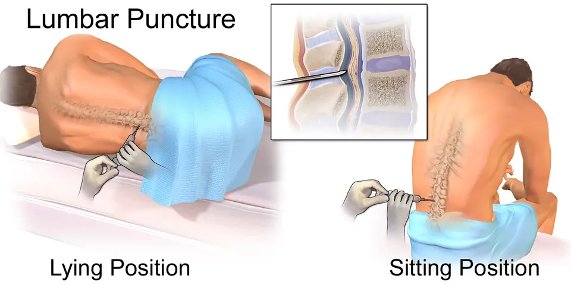

DX.5 — Méningite bactérienne aiguë
La méningite bactérienne aiguë touche les méninges et entraîne encore 13 % de décès à 30 jours chez l’adulte au DanemarkS5. Le médecin isole, prélève les hémocultures et donne dexaméthasone et ceftriaxone dans les 30 minutes, puis ponctionne si rien ne l’interditS1. Les contacts d’un méningocoque reçoivent une prophylaxie, et tout survivant bénéficie d’un bilan audiologiqueS3S4.
Ce cours DX.5 reprend les sources citées ; aucun médecin ne l’a encore validé cliniquement.
1. Définition
La méningite bactérienne aiguë se définit comme une infection bactérienne des méninges, dont le pus envahit l’espace sous-arachnoïdien et modifie le liquide céphalorachidien (LCR)S1S7. L’algorithme genevois parle de méningite communautaire aiguë lorsque les symptômes évoluent depuis moins de 48 heuresS1.
2. Épidémiologie (Suisse, puis Europe)
Les urgentistes genevois chiffrent l’incidence entre 0,6 et 4 cas pour 100 000 adultes par année, avec une mortalité de 10 à 30 %S1. Au Danemark, une cohorte nationale prospective a mesuré 2,9 cas pour 100 000 adultes par année entre 2015 et 2023S5. La maladie occupe ainsi le septième rang de fréquence du lot dans la Phase A, mais le rang E2 de l’ordre d’exclusion. Les chiffres de fréquence, les germes responsables et la gravité mesurée détaillent ces données.
Fréquence : Suisse, puis Europe
| Donnée | Valeur | Lieu, période | Source |
|---|---|---|---|
| Incidence de la méningite bactérienne | 0,6 à 4 cas pour 100 000 adultes par année | Revue genevoise, 2016 | S1 |
| Incidence de la méningite aseptique, virale comprise | 7,6 cas pour 100 000 adultes par année | Revue genevoise, 2016 | S1 |
| Incidence de la forme communautaire | 2,9 pour 100 000 adultes par année | Danemark, 2015 à 2023 | S5 |
| Incidence des cas à culture du LCR positive | 1,33 pour 100 000 adultes par année | Danemark | S5 |
| Épisodes inclus | 1192 épisodes chez 1174 adultes | Danemark | S5 |
| Âge médian | 65 ans | Danemark | S5 |
| Proportion de femmes | 50 % | Danemark | S5 |
Aucune source suisse lue ne publie une incidence nationale récente, si bien que la cohorte danoise sert de repère européen par transpositionS1S5.
Germes responsables
| Germe | Part ou terrain | Source |
|---|---|---|
| Streptococcus pneumoniae et Neisseria meningitidis | 80 à 85 % des cas | S1 |
| Streptococcus pneumoniae seul | 437 épisodes sur 1192, soit 37 % | S5 |
| Neisseria meningitidis | 63 épisodes sur 1192, soit 5 % | S5 |
| Germe non identifié | 233 épisodes sur 1192, soit 20 % | S5 |
| Listeria monocytogenes | Plus de 50 ans avec déficience immunitaire acquise, femme enceinte | S1 |
| Haemophilus influenzae | Exceptionnel depuis la vaccination | S1 |
| Staphylococcus aureus, streptocoques bêta-hémolytiques | Fréquents lorsque seule l’hémoculture est positive | S5 |
Le changement d’épidémiologie s’explique par les vaccinations infantiles contre Haemophilus influenzae de type b, le pneumocoque et le méningocoque, selon les auteurs danoisS5.
Gravité : mortalité et séquelles
| Mesure | Valeur | Population | Source |
|---|---|---|---|
| Mortalité | 10 à 30 % | Littérature citée par les HUG (Hôpitaux universitaires de Genève) | S1 |
| Séquelles neurologiques | Près de 50 % des cas | Littérature citée par les HUG | S1 |
| Mortalité à 30 jours | 149 sur 1192, soit 13 % | Danemark | S5 |
| Mortalité à un an | 221 sur 1192, soit 19 % | Danemark | S5 |
| Mortalité hospitalière | 7 % | Danemark | S5 |
| Mortalité à 30 jours si hémoculture positive et LCR inflammatoire | 36 sur 162, soit 22 % | Danemark | S5 |
La gravité justifie le rang E2 : une méningite manquée tue ou laisse des séquelles, alors que le traitement précoce change le pronosticS1S5.
3. Physiopathologie
Les bactéries atteignent l’espace sous-arachnoïdien, où le pus irrite les méninges et provoque céphalée, raideur de nuque et parfois altération de la conscienceS1S7. Le pneumocoque et le méningocoque dominent chez l’adulte, alors que Listeria frappe surtout le sujet âgé, immunodéprimé ou la femme enceinteS1. L’anatomie des méninges situe l’infection, et le terrain explique le choix des antibiotiques.
Méninges et espace sous-arachnoïdien
Enveloppes du cerveau. Blausen représente en couleurs les couches qui séparent le cuir chevelu du cerveau, dont l’espace où circule le pus de la méningiteS7.

Le lecteur recherche d’abord seul l’os du crâne, la dure-mère, l’espace sous-arachnoïdien et le cortex cérébral.
- L’os du crâne forme la barrière rigide qui ne se dilate pas lorsque le cerveau gonfleS7.
- La dure-mère tapisse l’os et limite l’espace sous-dural, distinct du site de la méningiteS7.
- L’espace sous-arachnoïdien contient le LCR, que la ponction lombaire prélève pour le diagnosticS7S1.
- L’inflammation qui gagne le cerveau provoque les troubles de vigilance et parfois une encéphalite associéeS1S7.
L’infection de cet espace explique pourquoi le LCR change de composition et pourquoi la ponction lombaire reste l’examen de choixS1.
Terrain, voie d’entrée et conséquences thérapeutiques
| Terrain ou porte | Germe à couvrir | Conséquence | Source |
|---|---|---|---|
| Adulte immunocompétent | Pneumocoque, méningocoque | Ceftriaxone et dexaméthasone | S1 |
| Âge supérieur à 50 ans | Listeria monocytogenes | Ajout d’amoxicilline | S1 |
| Diabète, alcoolisme, néoplasie, immunosuppresseurs | Listeria monocytogenes | Ajout d’amoxicilline | S1 |
| Grossesse | Listeria monocytogenes | Ajout d’amoxicilline | S1 |
| Antécédent neurochirurgical | Germes hospitaliers | Méropénème et vancomycine, hors AIPS (information professionnelle suisse) dans ce cours | S1 |
| Splénectomie, maladie auto-immune | Germes encapsulés | Anamnèse ciblée | S1 |
| Immunodépression | Tous germes | 464 épisodes sur 1192, soit 39 % de la cohorte danoise | S5 |
Le terrain guide donc l’antibiothérapie empirique avant même le résultat du LCR, ce qui rend l’anamnèse décisiveS1.
4. Démarche diagnostique
Le service des urgences des HUG administre l’antibiotique et le corticoïde dans les 30 minutes qui suivent l’admission lorsqu’une méningite bactérienne est suspectéeS1. NICE (National Institute for Health and Care Excellence) fixe un délai d’une heure après l’arrivée à l’hôpital, ce qui reste plus permissif que le standard genevoisS4S1. La ponction lombaire précède l’antibiotique seulement lorsqu’elle ne retarde pas le traitement et qu’aucun critère n’impose une imagerieS1S4. Les étapes minutées et le niveau d’urgence ordonnent cette séquence.
Étapes minutées, de l’arrivée au traitement
| Étape | Action | Délai ou seuil | Conduite | Source |
|---|---|---|---|---|
| 1. Isoler | Isolement « gouttelettes », masque de soins à moins d’un mètre | Dès la suspicion | Chambre seule si possible | S1 |
| 2. Stabiliser | ABCDE (voies aériennes, respiration, circulation, état neurologique, exposition), une ou deux voies veineuses, score de Glasgow | Immédiat | Soins intensifs si défaillance | S1 |
| 3. Prélever le sang | Deux paires d’hémocultures, formule sanguine, CRP (protéine C réactive), crase, créatinine, glycémie, tests hépatiques, VIH (virus de l’immunodéficience humaine) | Avant l’antibiotique | Lactatémie en cas de sepsis | S1 |
| 4. Décider de l’imagerie | Scanner cérébral si critère présent | Immunodépression, Glasgow inférieur à 10, convulsion récente, déficit | Antibiotique avant le scanner | S1 |
| 5. Ponctionner | Ponction lombaire | Dans les 30 minutes, avant l’antibiotique si aucun obstacle | Antibiotique d’abord si retard prévisible | S1 |
| 6. Traiter | Dexaméthasone puis ceftriaxone, amoxicilline si risque de Listeria | Au plus tard 30 minutes après l’admission | Adapter au LCR | S1 |
| 7. Orienter | Soins intensifs si examen direct positif | Dès le résultat | Avis infectiologique | S1 |
Le protocole genevois enchaîne ces étapes sans attendre le laboratoire, car tout retard antibiotique augmente la mortalitéS1.
Niveau d’urgence selon le tableau
| Situation | Délai | Conduite | Source |
|---|---|---|---|
| Purpura, pétéchies ou choc | Immédiat | Antibiotique sans attendre la ponction | S1 |
| Méningocoque fortement suspecté hors hôpital | Le plus tôt possible | Ceftriaxone ou benzylpénicilline intraveineuse ou intramusculaire avant le transfert | S4 |
| Transfert retardé | Avant le transfert | Ceftriaxone ou benzylpénicilline hors de l’hôpital | S4 |
| Critère de scanner présent | Immédiat | Hémocultures, dexaméthasone et antibiotique, puis scanner | S1 |
| Tableau viral probable, bon état, sans purpura | Attente discutée | Analyse du LCR avant toute décision | S1 |
NICE exclut l’antibiotique préhospitalier en cas d’allergie sévère à la ceftriaxone ou à la benzylpénicillineS4.
5. Anamnèse ciblée et drapeaux rouges
L’anamnèse recherche une immunosuppression, une splénectomie, une maladie auto-immune ou un antécédent neurochirurgical, car ces terrains modifient l’antibiothérapieS1. Elle précise aussi le voyage récent, la vaccination, le contage et les comportements sexuels à risqueS1. Les questions utiles et les drapeaux rouges guident l’entretien aux urgences.
Questions ciblées et leur portée
| Question | Réponse évocatrice | Portée | Source |
|---|---|---|---|
| Depuis quand ? | Moins de 48 heures | Méningite communautaire aiguë | S1 |
| Fièvre ? | Présente dans 77 à 97 % des cas | Syndrome méningé fébrile | S1 |
| Céphalée ? | Rapportée dans 76 % des épisodes | Signe fréquent | S5 |
| Immunosuppression, diabète, alcool, néoplasie ? | Oui | Couvrir Listeria | S1 |
| Grossesse ? | Oui | Couvrir Listeria | S1 |
| Splénectomie, maladie auto-immune ? | Oui | Terrain à risque | S1 |
| Opération neurochirurgicale ? | Oui | Schéma élargi | S1 |
| Contact avec un malade ? | Oui | Méningocoque possible, prophylaxie de l’entourage | S1S2 |
| Vaccination ? | Statut incomplet | Germe évitable possible | S1 |
| Vomissements, convulsions ? | Vomissements en jet, crise | Hypertension intracrânienne, scanner | S2S1 |
Drapeaux rouges et conduite
| Drapeau rouge | Signification | Conduite | Source |
|---|---|---|---|
| Pétéchies ou purpura | Méningocoque probable, observé dans 11 à 26 % des cas | Antibiotique immédiat | S1 |
| Choc, index de choc élevé | Sepsis grave | Soins intensifs | S1 |
| Glasgow inférieur à 10 | Atteinte cérébrale | Scanner, antibiotique d’abord | S1 |
| Crise épileptique récente | Atteinte cérébrale | Scanner, antibiotique d’abord | S1 |
| Paralysie faciale, trouble du langage, champ visuel anormal | Déficit focal | Scanner, antibiotique d’abord | S1 |
| Confusion, amnésie, hallucinations, aphasie | Encéphalite | Ajouter l’aciclovir, hors AIPS dans ce cours | S1 |
| Purpura qui s’étend, Glasgow qui baisse | Aggravation | Appel médical immédiat | S2 |
Un seul drapeau rouge suffit pour traiter immédiatement, puisque la ponction et l’imagerie ne doivent jamais retarder l’antibiotiqueS1S4.
6. Examen physique ciblé, région par région
L’examen suit un ordre fixe : constantes et conscience, peau, nuque, neurologie, sphère ORL (oto-rhino-laryngologie), puis signes propres au nourrissonS1S2. Aucun signe isolé ne permet d’exclure la méningite, si bien que l’examen sert surtout à repérer la gravité et les critères d’imagerieS1. Chaque région a sa fenêtre : constantes et conscience, peau, nuque et signes méningés, neurologie, sphère ORL et nourrisson.
Constantes et conscience
| Mesure | Anomalie | Interprétation | Source |
|---|---|---|---|
| Température | Fièvre | Infection, présente dans 77 à 97 % des cas | S1 |
| Fréquence cardiaque, tension, fréquence respiratoire, saturation | Tachycardie, hypotension | Sepsis, index de choc | S2S1 |
| Score de Glasgow, pupilles | Glasgow inférieur à 10 | Critère de scanner avant ponction | S1S2 |
| Vigilance | Troubles de la vigilance, 30 à 69 % des cas | Gravité, encéphalite possible | S1 |
Peau et circulation périphérique
| Recherche | Anomalie | Interprétation | Source |
|---|---|---|---|
| Inspection complète | Pétéchies, purpura | Méningocoque, antibiotique immédiat | S1S2 |
| Couleur et chaleur | Pâleur, marbrures, extrémités froides | Choc | S2 |
| Temps de recoloration | Allongé | Hypoperfusion | S2 |
| Organes génitaux, peau | Vésicules | Herpès, origine virale | S1 |
La procédure pédiatrique genevoise demande de noter la localisation des pétéchies, afin de reconnaître rapidement leur extensionS2.
Nuque et signes méningés
| Geste | Résultat positif | Valeur | Source |
|---|---|---|---|
| Flexion passive de la nuque | Raideur | Présente dans 65 à 83 % des cas | S1 |
| Raideur dans la cohorte danoise | Présente | 546 épisodes sur 1062, soit 51 % | S5 |
| Signes de Kernig et de Brudzinski | Positifs | Sensibilité faible, spécificité supérieure à 80 % | S1 |
| Triade fièvre, raideur, trouble de vigilance | Complète | 41 à 51 % des cas selon les HUG ; 23 % au Danemark | S1S5 |
Une nuque souple ne permet donc pas d’exclure la méningite, et seule la ponction lombaire trancheS1.
Examen neurologique
| Recherche | Anomalie | Conduite | Source |
|---|---|---|---|
| Nerfs crâniens | Paralysie faciale | Scanner avant ponction, facteur pronostique | S1 |
| Champ visuel, langage | Anomalie | Scanner avant ponction | S1 |
| Fonctions supérieures | Confusion, amnésie, aphasie, changement de personnalité | Méningo-encéphalite : aciclovir, hors AIPS dans ce cours | S1 |
| Crise convulsive | Dans la dernière semaine | Scanner avant ponction | S1 |
Signes propres au nourrisson et à l’enfant
| Recherche | Anomalie | Source |
|---|---|---|
| Fontanelle, enfant à 45° | Fontanelle bombée et tendue avant 1 an | S2 |
| Tonus | Hypotonie axiale, tête qui tombe en arrière lorsque l’on soulève l’enfant | S2 |
| Comportement | Irritabilité, pleurs aigus ou gémissements inconsolables | S2 |
| Nuque | Incapacité de poser le menton sur le sternum | S2 |
Chez le nourrisson, les signes méningés classiques manquent souvent, ce qui justifie cette recherche spécifiqueS2.
7. Approche syndromique
Le syndrome méningé fébrile associe fièvre, céphalée et raideur de nuque, mais il recouvre plusieurs causes que la clinique ne sépare pas avec certitudeS1. La rhumatologie genevoise rappelle que la méningite figure aussi parmi les causes de cervicalgie fébrile, à côté de la spondylodiscite et de la chondrocalcinoseS6. Le tableau comparatif distingue la méningite bactérienne des autres causes du syndrome méningé fébrile.
Diagnostics voisins et arguments
| Diagnostic | Argument pour | Argument contre la méningite bactérienne | Source |
|---|---|---|---|
| Méningite virale | Entérovirus 22 à 26 %, herpès 15 à 17 % | LCR lymphocytaire, glucose normal, PCR (amplification génique par polymérase) positive | S1 |
| Méningo-encéphalite | Confusion, crise, déficit | PCR VZV (virus varicelle-zona) ou HSV-1 positive | S1 |
| Méningite tuberculeuse ou fongique | Évolution plus lente | Culture spécifique | S1 |
| Abcès cérébral | Déficit focal | Imagerie | S1 |
| Hémorragie sous-arachnoïdienne (DX.6) | Raideur, céphalée | Début brutal sans fièvre initiale | S1 |
| Spondylodiscite (DX.8) | Fièvre et cervicalgie | Douleur d’effort du segment, IRM (imagerie par résonance magnétique) rachidienne | S6 |
| Syndrome de la dent couronnée (DX.9) | Douleur haute fébrile du sujet âgé | Calcifications autour de la dent de l’axe | S6 |
| Méningite médicamenteuse, carcinomateuse ou inflammatoire | Contexte | Cytologie, anamnèse médicamenteuse | S1 |
La distinction repose finalement sur le LCR, car même la triade classique manque dans plus de la moitié des casS1S5.
8. Diagnostic positif et critères
NICE confirme le diagnostic sur l’association des signes cliniques, des analyses sanguines et des résultats de la ponction lombaireS4. L’examen direct, la culture ou la PCR du LCR identifient le germe, tandis que la cellularité, le glucose, les protéines et le lactate orientent l’interprétationS1. Les valeurs du LCR et les performances des tests chiffrent cette interprétation.
Valeurs du LCR selon la cause
| Paramètre | LCR normal | Méningite virale | Méningite bactérienne | Source |
|---|---|---|---|---|
| Globules blancs | Moins de 5 par µl | 10 à 100 par µl, parfois 100 à 1000 | Plus de 2000 par µl, parfois 1000 à 2000 | S1 |
| Répartition | — | Lymphocytes plus de 50 % | Neutrophiles plus de 80 % | S1 |
| Glucose | 2,7 à 4,1 mmol/l | — | Moins de 2,2 mmol/l | S1 |
| Rapport glucose LCR sur sang | Plus de 0,67 | 0,5 à 0,67 | Moins de 0,5 | S1 |
| Protéines | Moins de 50 mg/dl | Moins de 150 mg/dl | Plus de 220 mg/dl, parfois 100 à 500 | S1 |
| Lactate | Moins de 3,5 mmol/l | Moins de 3,5 mmol/l | Plus de 3,5 mmol/l | S1 |
Une méningite bactérienne débutante ou déjà traitée peut montrer une prédominance lymphocytaire, ce qui piège l’interprétation isolée de la cellularitéS1.
Performances des examens diagnostiques
| Examen | Performance | Limite | Source |
|---|---|---|---|
| Coloration de Gram du LCR | Sensibilité 50 à 90 %, spécificité 97 à 100 % | Baisse si le LCR suit l’antibiotique de 1 à 2 heures | S1 |
| Culture du LCR | Positive dans 80 à 90 % des méningites bactériennes | Aucune croissance au-delà de 8 heures d’antibiotique | S1 |
| Hémocultures | Germe identifié dans 50 à 80 % des cas | Rendement réduit de 20 % après antibiotique | S1 |
| Rapport glucose inférieur à 0,5 | Sensibilité excellente, spécificité 57,1 % | Peu spécifique | S1 |
| Lactate du LCR au seuil de 3,5 mmol/l | Excellentes sensibilité et spécificité | Faussé par antibiotique, hémorragie, convulsions | S1 |
| Procalcitonine sérique | Sensibilité 90 %, spécificité 98 % | Seuils variables, non validée en routine | S1 |
| PCR pneumocoque et méningocoque du LCR | Utile après antibiotique | Demandée si traitement préalable | S1 |
Les auteurs genevois ne recommandent pas encore ces marqueurs en routine, faute de validation à large échelleS1.
9. Examens complémentaires
Le bilan comprend le sang, le LCR et, dans des situations définies, un scanner cérébral avant la ponctionS1. NICE déconseille l’imagerie systématique avant la ponction, ce qui concorde avec les critères restrictifs genevoisS4S1. Les analyses sanguines, le bilan du LCR, les critères de scanner, les obstacles à la ponction et la ponction illustrée détaillent chaque examen.
Analyses sanguines : indication et interprétation
| Examen | Indication | Interprétation | Source |
|---|---|---|---|
| Deux paires d’hémocultures | Avant tout antibiotique | Germe dans 50 à 80 % des cas | S1 |
| Formule sanguine, CRP | Systématique | Inflammation, orientation | S1 |
| Crase, plaquettes | Avant la ponction | Thrombopénie inférieure à 50 G/l : ponction différée | S1 |
| Créatinine, tests hépatiques, glycémie | Systématique | Fonction d’organe, rapport glucose | S1 |
| Lactatémie | Sepsis | Gravité | S1S4 |
| Dépistage du VIH | Systématique | Terrain immunodéprimé | S1 |
| PCR méningocoque et pneumocoque sur sang total | Méningococcie suspectée | Diagnostic sans culture | S4 |
Bilan minimal du LCR
| Analyse | Indication | Source |
|---|---|---|
| Culture et microscopie, coloration de Gram | Tout patient | S1 |
| Cellularité et répartition | Tout patient | S1 |
| Protéines, glucose avec glycémie simultanée, lactate | Tout patient | S1 |
| PCR méningocoque et pneumocoque | Antibiotique déjà reçu | S1 |
| PCR HSV-1, HSV-2, VZV et entérovirus | Tableau viral ou encéphalite | S1 |
| Tube de réserve | Tout patient | S1 |
La procédure pédiatrique genevoise prélève le tube de cellularité en dernier, afin que le LCR soit le plus clair possibleS2.
Critères de scanner cérébral avant la ponction
| Critère | Raison | Source |
|---|---|---|
| Patient immunocompromis | Lésion expansive possible | S1 |
| Glasgow inférieur à 10 sur 15 | Risque d’engagement | S1 |
| Convulsion dans la dernière semaine | Lésion focale possible | S1 |
| Paralysie faciale, champ visuel anormal, trouble du langage | Déficit focal | S1 |
Lorsque le scanner s’impose, les hémocultures, la dexaméthasone et l’antibiotique le précèdent, sans attendre son résultatS1.
Obstacles à la ponction lombaire
| Obstacle | Seuil | Conduite | Source |
|---|---|---|---|
| Trouble de la coagulation | INR (rapport international normalisé) supérieur à 1,8 ou TP (taux de prothrombine) inférieur à 50 % | Antibiotique immédiat, ponction différée | S1 |
| Thrombopénie | Moins de 50 G/l | Antibiotique immédiat, ponction différée | S1 |
| Anticoagulation efficace, antiagrégant autre que l’aspirine | Présent | Antibiotique immédiat | S1 |
| Abcès épidural spinal | Suspecté | Pas de ponction | S1 |
| Facteur de risque d’engagement non corrigé | Présent | Pas de ponction avant correction | S4 |
Ponction lombaire illustrée
Ponction lombaire. Blausen montre en couleurs la ponction en position couchée et assise, avec un agrandissement de l’aiguille dans l’espace sous-arachnoïdienS8.

Le lecteur repère d’abord seul les deux positions, l’aiguille et le corps vertébral de l’agrandissement.
- En position couchée, le médecin introduit l’aiguille entre deux épineuses lombaires, ce qui exige un dos bien fléchiS8.
- L’extrémité de l’aiguille atteint l’espace sous-arachnoïdien, où se recueille le LCRS8S1.
- En position assise, le patient se penche en avant pour ouvrir les espaces interépineuxS8.
- Le corps vertébral limite le canal en avant, sous le niveau où la moelle se termineS8.
La ponction doit précéder l’antibiotique seulement si elle peut être faite dans les 30 minutes sans obstacleS1.
10. Arbre décisionnel
L’arbre part du syndrome méningé fébrile et répond successivement à la gravité, à l’imagerie, à la ponction puis au germeS1S4. L’arbre en tableau enchaîne huit questions fermées, depuis le soupçon clinique jusqu’à la prophylaxie de l’entourage.
Arbre décisionnel en tableau
| Question | Si oui | Si non | Source |
|---|---|---|---|
| Méningite bactérienne suspectée ? | Isolement, ABCDE, hémocultures, bilan sanguin | Autre diagnostic du lot | S1 |
| Purpura, choc ou ponction retardée ? | Dexaméthasone et ceftriaxone immédiates | Question suivante | S1 |
| Critère de scanner présent ? | Traitement, puis scanner, puis ponction si possible | Ponction dans les 30 minutes, puis traitement | S1 |
| Risque de Listeria ? | Ajouter l’amoxicilline | Ceftriaxone seule | S1 |
| Signes d’encéphalite ? | Ajouter l’aciclovir, hors AIPS dans ce cours | Question suivante | S1 |
| Examen direct ou culture positifs ? | Soins intensifs, traitement ciblé | Interpréter selon la probabilité prétest | S1 |
| Germe autre que pneumocoque ou Haemophilus ? | Arrêter la dexaméthasone | Poursuivre la dexaméthasone 4 jours | S1S4 |
| Méningocoque ? | Prophylaxie des contacts étroits dans les 24 heures | Pas de prophylaxie | S3 |
11. Prise en charge selon les recommandations suisses
11.A But. Le traitement vise à stériliser le LCR, à limiter l’inflammation responsable des séquelles et à protéger l’entourage d’un cas de méningocoqueS1S3. Il réduit la mortalité, d’autant plus que l’antibiotique arrive tôt après l’admissionS1.
11.B Moyens. Le traitement structuré, les durées selon le germe et la prophylaxie des contacts décrivent la stratégie. Quatre molécules disposent d’une fiche tirée de l’information professionnelle suisse (AIPS) : la ceftriaxone (Rocephin) et la dexaméthasone (Fortecortin). S’y ajoutent l’amoxicilline (Amoxicillin OrPha) et la ciprofloxacine (Ciprofloxacine Sandoz eco), réservée aux contacts.
11.C Surveillance. La surveillance associe le Glasgow, les constantes, la réponse clinique et le dépistage des séquelles, en particulier auditivesS1S4. Le calendrier de suivi fixe chaque contrôle, et les signes de gravité indiquent quand renforcer la prise en charge.
11.D Pronostic. La mortalité atteint encore 13 % à 30 jours dans la cohorte danoise, malgré l’antibiotique et la corticothérapieS5. Le tableau pronostique montre les facteurs mesurés dans la cohorte danoise.
Traitement structuré de la méningite bactérienne de l’adulte
| Situation | Molécule | Dose AIPS et schéma genevois | Durée et contrôle | Critère d’échec | Source |
|---|---|---|---|---|---|
| Toute suspicion de méningite bactérienne | Dexaméthasone, Fortecortin | AIPS : 0.15 mg/kg toutes les 6 heures durant 4 jours, avant la première antibiothérapieS10 ; schéma genevois de 10 mg toutes les 6 heures, hors AIPSS1 | Arrêt si germe autre que pneumocoque ou Haemophilus | Germe non concerné : arrêt | S10S1S4 |
| Traitement empirique | Ceftriaxone, Rocephin | AIPS : 1 - 2 g une fois par jour, jusqu’à 4 g en infection sévèreS9 ; schéma genevois de 2 g toutes les 12 heures, hors AIPSS1 | Adapter au germe et à l’antibiogramme | Fièvre, Glasgow ou LCR qui ne s’améliorent pas | S9S1 |
| Âge supérieur à 50 ans, immunodépression, grossesse | Amoxicilline, Amoxicillin OrPha | AIPS : 2 g en perfusion brève (30 min) 3 à 6 fois par jourS11 ; schéma genevois de 2 g toutes les 4 heures, hors AIPSS1 | 21 jours si Listeria | Germe résistant | S11S1S4 |
| Pneumocoque résistant à la ceftriaxone suspecté | Vancomycine | Molécule hors AIPS dans ce cours, sans dose | Selon l’infectiologue | Échec clinique | S1 |
| Antécédent neurochirurgical | Méropénème et vancomycine | Molécules hors AIPS dans ce cours, sans dose | Selon l’infectiologue | Échec clinique | S1 |
| Encéphalite suspectée | Aciclovir intraveineux | Molécule hors AIPS dans ce cours, sans dose | 14 jours selon les HUG | PCR négative : réévaluer | S1 |
| Méningocoque, cas index | Isolement « gouttelettes » | Maintenu | Jusqu’à 24 heures après le début du traitement | Contact non protégé : prophylaxie | S1S3 |
Les doses genevoises dépassent parfois le schéma courant de l’AIPS, et le tableau signale cette divergence au lieu de la masquerS1S9.
Durées selon le germe : HUG, NICE et AIPS
| Germe | HUG 2016 | NICE 2024 | AIPS Rocephin, enfant | Source |
|---|---|---|---|---|
| Neisseria meningitidis | 7 jours | 5 jours | 4 jours | S1S4S9 |
| Streptococcus pneumoniae | 10 à 14 jours | 10 jours | 7 jours | S1S4S9 |
| Haemophilus influenzae | — | 7 jours pour le type b | 6 jours | S4S9 |
| Listeria monocytogenes | 21 jours | 21 jours d’amoxicilline ou d’ampicilline | — | S1S4 |
| Streptocoque du groupe B | — | 14 jours | — | S4 |
| LCR évocateur, cultures et PCR négatives | — | 10 jours | — | S4 |
Les durées divergent entre sources ; NICE impose dans chaque cas un avis infectiologique si le patient n’a pas récupéré à l’échéanceS4S1.
Prophylaxie des contacts d’un cas de méningocoque
| Élément | Règle OFSP (Office fédéral de la santé publique) reprise par le canton de Fribourg | Source |
|---|---|---|
| Période de contagiosité | 7 jours avant les premiers signes jusqu’à 24 heures après le début du traitement | S3 |
| Contacts étroits | Ménage commun, internat, caserne ; baiser intense ; réanimation sans protection ; sport de combat ; même groupe de crèche | S3 |
| Pas de contact étroit | Simple proximité, contact après le décès, même classe scolaire sans autre critère | S3 |
| Délai | Le plus tôt possible, idéalement dans les 24 heures après le diagnostic du cas index | S3 |
| Limite | Jusqu’au 10e jour après le dernier contact | S3 |
| Premier choix dès 1 mois | Ciprofloxacine en dose unique, sauf femme enceinte ; AIPS de l’adulte : 500 mg en dose uniqueS12 | S3S12 |
| Alternative | Rifampicine sur 2 jours, hors AIPS dans ce cours, sans dose | S3 |
| Femme enceinte | Ceftriaxone 250 mg en une dose intramusculaire, dose de la recommandation hors AIPSS3 | S3 |
| Vaccination post-exposition | Vaccin conjugué contre les sérogroupes A, C, W, Y, idéalement en même temps que la prophylaxie | S3 |
| Déclaration | Liste des contacts traités transmise au médecin cantonal sans délai | S3 |
Une vaccination antérieure ne dispense pas de l’antibiotique, selon le document cantonal qui reprend le Bulletin de l’OFSPS3.
Ceftriaxone — Rocephin® (n° 44625)
| Rubrique | Contenu de l’AIPS (information professionnelle suisse) |
|---|---|
| Indication | « Infections dues à des germes sensibles à la ceftriaxone, telles que: » ; la liste comprend la « méningite »S9. |
| Posologie de l’adulte | « En général, 1 - 2 g de Rocephin une fois par jour (toutes les 24 heures). Lors d'infections sévères ou en présence de germes moyennement sensibles, la dose quotidienne unique peut être augmentée jusqu'à 4 g. »S9 |
| Méningite de l’enfant | « En cas de méningite bactérienne chez l'enfant en bas âge et l'enfant, le traitement est instauré à raison de 100 mg/kg (pas plus de 4 g) une fois par jour. »S9 |
| Contre-indications | « Rocephin est contre-indiqué chez les patients présentant une hypersensibilité connue à la ceftriaxone, à l'un des excipients ou à toute autre céphalosporine. » « Les solutions de ceftriaxone contenant de la lidocaïne ne doivent en aucun cas être administrées par voie intraveineuse. »S9 |
| Grossesse | « Bien que les études précliniques correspondantes n'aient permis de déceler aucune propriété tératogène, Rocephin ne doit être administré pendant la grossesse, particulièrement au cours des trois premiers mois, que lorsqu'il est formellement indiqué. »S9 |
| Allaitement | « Étant donné que la ceftriaxone, même si ce n'est qu'en faible quantité, et la lidocaïne (contenue dans le solvant pour l'injection i.m.) sont excrétées dans le lait maternel, la préparation ne doit pas être utilisée durant la période d'allaitement. Si un traitement s'avère absolument nécessaire, l'allaitement doit être interrompu. »S9 |
| Mise à jour | Juin 2025S9. |
NICE rappelle que la ceftriaxone est incompatible avec les solutions contenant du calcium, une alerte reprise de l’agence britannique du médicamentS4.
Dexaméthasone — Fortecortin® Inject (n° 48669)
| Rubrique | Contenu de l’AIPS (information professionnelle suisse) |
|---|---|
| Indication | La liste de l’AIPS cite l’« Œdème cérébral » provoqué notamment par l’« encéphalite » ou la « méningite »S10. |
| Posologie dans la méningite | « encéphalite/méningite: administrer 0.15 mg/kg toutes les 6 heures durant 4 jours, ou 0.4 mg/kg toutes les 12 heures durant 2 jours, en commençant avant la première antibiothérapie »S10 |
| Contre-indications | « Dans des situations dans lesquelles l'administration de glucocorticoïdes peut sauver la vie du patient, une administration aiguë ne présente aucune contre-indication. Ne pas utiliser ce médicament en cas d'hypersensibilité à l'un des composants. »S10 |
| Grossesse | « C'est pourquoi Fortecortin, comme tous les glucocorticoïdes, ne doit pas être administré pendant la grossesse, et en particulier au cours du premier trimestre, sauf en cas de nécessité absolue. »S10 |
| Allaitement | « C'est pourquoi, les mères recevant des glucocorticoïdes pendant l'allaitement doivent arrêter d'allaiter. »S10 |
| Mise à jour | Juin 2022S10. |
Les HUG autorisent la dexaméthasone jusqu’à 4 heures après l’antibiotique, alors que NICE accepte un retard de moins de 12 heures, une divergence à connaîtreS1S4.
Amoxicilline — Amoxicillin OrPha (n° 68815)
| Rubrique | Contenu de l’AIPS (information professionnelle suisse) |
|---|---|
| Indication | La liste de l’AIPS comprend les « Infections sévères telles que: septicémie » et la « méningite »S11. |
| Posologie de l’adulte | « Adultes et enfants de plus de 40 kg: Infections légères à moyennes: 1 g i.v. 3 à 4 fois par jour. »S11 « Infections sévères: 2 g en perfusion brève (30 min) 3 à 6 fois par jour. »S11 |
| Insuffisance rénale | « Lors d'une clairance de la créatinine supérieure à 30 ml /min, aucun ajustement posologique n'est requis. »S11 |
| Contre-indications | « Amoxicillin OrPha ne doit pas être administré aux patients présentant une hypersensibilité aux pénicillines ou aux céphalosporines. » La « Mononucléose infectieuse, leucémie lymphoïde » figurent aussi parmi les contre-indicationsS11. |
| Grossesse | « La prudence est donc de rigueur lors de l'emploi d ’ Amoxicillin OrPha durant la grossesse. »S11 |
| Allaitement | « La substance ne doit donc pas être administrée pendant la période d'allaitement ou, si nécessaire, l'allaitement doit être interrompu. »S11 |
| Mise à jour | Février 2026S11. |
La grossesse compte parmi les indications de l’amoxicilline dans la méningite, car Listeria y menace la mère et le fœtus selon les HUGS1.
Ciprofloxacine — Ciprofloxacine Sandoz® eco (n° 58018)
| Rubrique | Contenu de l’AIPS (information professionnelle suisse) |
|---|---|
| Indication et dose | L’AIPS cite « Neisseria meningitidis 500 mg en dose unique 1 jour (dose unique) »S12. |
| Contre-indications | « En cas d'hypersensibilité à la ciprofloxacine, à un autre principe actif du type des quinolones ou à un excipient de la composition. En attendant des données supplémentaires, la ciprofloxacine ne doit pas être administrée aux femmes enceintes ou celles qui allaitent. »S12 |
| Grossesse | « La ciprofloxacine ne doit pas être administrée aux femmes enceintes, sauf en cas d'indication claire. »S12 |
| Allaitement | « En raison du risque de lésion du cartilage en croissance, la ciprofloxacine ne doit pas être utilisée pendant l'allaitement. »S12 |
| Mise à jour | Août 2025S12. |
L’AIPS restreint l’usage chez l’enfant en croissance, alors que la recommandation de l’OFSP propose la ciprofloxacine dès 1 mois, une divergence assumée par l’autorité sanitaireS12S3.
Calendrier de surveillance
| Moment | Contrôle | Objectif | Source |
|---|---|---|---|
| Urgences | Glasgow, constantes, pétéchies | Dépister l’aggravation rapide | S1S2 |
| Examen direct positif | Admission en soins intensifs en général | Détérioration possible en quelques heures | S1 |
| Résultat de culture | Germe et antibiogramme | Adapter la molécule et la durée, arrêter la dexaméthasone si besoin | S1S4 |
| Fin de la durée prévue | État clinique | Arrêt si récupération, sinon avis infectiologique | S4 |
| Avant la sortie | Besoins de suivi : cognition, neurologie, audition, peau, os, reins, psychologie | Plan écrit dans la lettre de sortie | S4 |
| Dans les 4 semaines après rétablissement | Bilan audiologique, si possible avant la sortie | Dépister la surdité, discuter un implant cochléaire | S4 |
| Après la sortie | Médecin traitant informé du plan | Continuité du suivi | S4 |
Critères d’échec et de gravité
| Signe | Hypothèse | Conduite | Source |
|---|---|---|---|
| Glasgow bas à l’admission ou qui baisse | Atteinte cérébrale, engagement | Soins intensifs, imagerie | S1 |
| Index de choc élevé, défaillance d’organe | Sepsis grave | Soins intensifs | S1 |
| Paralysie faciale | Évolution défavorable | Surveillance rapprochée | S1 |
| Évolution en moins de 24 heures | Forme fulminante | Surveillance rapprochée | S1 |
| Pas de récupération à l’échéance | Germe mal couvert, complication | Avis infectiologique | S4 |
| Pneumocoque peu sensible | Résistance à la ceftriaxone | Ajout de vancomycine selon les HUG | S1 |
Pronostic : données mesurées
| Donnée | Valeur | Population | Source |
|---|---|---|---|
| Mortalité à 30 jours | 13 % | Danemark, 1192 épisodes | S5 |
| Mortalité à un an | 19 % | Danemark | S5 |
| Mortalité à 30 jours si étiologie inconnue | 10 sur 233, soit 4 % | Danemark | S5 |
| Facteurs indépendants de décès | Âge, immunodépression, conscience altérée, bactériémie, pneumocoque | Danemark | S5 |
| Séquelles neurologiques | Près de la moitié des cas | Littérature citée par les HUG | S1 |
La dexaméthasone réduit la mortalité et les séquelles, surtout dans la méningite à pneumocoque, selon la revue genevoiseS1.
12. Prévention
La prévention repose sur la vaccination, l’isolement du cas et la prophylaxie de l’entourage d’un méningocoqueS1S3S5. Le tableau de prévention relie chaque mesure à la personne qu’elle protège.
Mesures de prévention
| Niveau | Mesure | But | Source |
|---|---|---|---|
| Primaire | Vaccination de l’enfant contre Haemophilus influenzae de type b | Méningite à Haemophilus devenue exceptionnelle | S1 |
| Primaire | Vaccinations infantiles contre le pneumocoque et le méningocoque | Changement de l’épidémiologie observé au Danemark | S5 |
| Secondaire | Isolement « gouttelettes » du cas | Limiter la transmission | S1 |
| Secondaire | Prophylaxie antibiotique des contacts étroits dans les 24 heures | Éradiquer le portage | S3 |
| Secondaire | Vaccin conjugué A, C, W, Y des contacts | Protéger contre ces sérogroupes | S3 |
| Tertiaire | Bilan audiologique et suivi des séquelles | Réhabiliter tôt | S4 |
Le personnel hospitalier exposé suit les directives du médecin du personnel et de l’unité de prévention de l’infection, selon le document cantonalS3.
13. Points clés
- Un syndrome méningé fébrile impose l’isolement, les hémocultures et l’antibiotique dans les 30 minutes après l’admissionS1.
- La triade classique manque dans plus de la moitié des cas, si bien qu’une nuque souple ne permet jamais d’écarter le diagnosticS1S5.
- Le scanner précède la ponction seulement en cas d’immunodépression, de Glasgow inférieur à 10, de convulsion ou de déficitS1.
- La dexaméthasone précède ou accompagne la première dose de ceftriaxone et s’arrête si le germe n’est ni pneumocoque ni HaemophilusS1S4.
- Le médecin associe l’amoxicilline après 50 ans, chez l’immunodéprimé et pendant la grossesse pour couvrir ListeriaS1.
- Les contacts étroits d’un méningocoque reçoivent une prophylaxie dans les 24 heures et un vaccin conjuguéS3.
- Un bilan audiologique dans les 4 semaines fait partie du suivi de tout survivantS4.
14. Pièges et questions fréquentes à l’examen fédéral suisse
Les pièges tiennent au retard antibiotique, au scanner systématique et à la confiance excessive dans l’examen cliniqueS1S4. Les pièges classiques, les questions fréquentes et les cas commentés entraînent au tri urgent attendu à l’examen fédéral suisse.
Pièges classiques
| Piège | Conséquence | Correction | Source |
|---|---|---|---|
| Attendre le scanner pour traiter | Retard antibiotique, mortalité accrue | Hémocultures, dexaméthasone et antibiotique avant le scanner | S1 |
| Exclure la méningite sur une nuque souple | Diagnostic manqué | Ponction lombaire | S1 |
| Oublier l’amoxicilline après 50 ans | Listeria non couverte | Ajouter l’amoxicilline | S1 |
| Poursuivre la dexaméthasone quel que soit le germe | Corticoïde inutile | Arrêt si germe autre que pneumocoque ou Haemophilus | S1S4 |
| Lire une cellularité lymphocytaire comme virale | Méningite bactérienne débutante manquée | Interpréter glucose, protéines, lactate et Gram | S1 |
| Oublier l’entourage | Cas secondaires | Prophylaxie des contacts étroits dans les 24 heures | S3 |
| Oublier l’audition | Surdité non dépistée | Bilan audiologique dans les 4 semaines | S4 |
Questions fréquentes
| Question | Réponse attendue | Source |
|---|---|---|
| Quel délai pour l’antibiotique aux HUG ? | 30 minutes après l’admission | S1 |
| Quels critères imposent un scanner avant la ponction ? | Immunodépression, Glasgow inférieur à 10, convulsion récente, déficit focal | S1 |
| Quand donner la dexaméthasone ? | Avant ou avec la première dose d’antibiotique | S1S4 |
| Quel germe impose l’amoxicilline ? | Listeria monocytogenes | S1 |
| Quel LCR évoque une origine bactérienne ? | Plus de 2000 globules blancs par µl, neutrophiles, glucose bas, protéines et lactate élevés | S1 |
| Qui reçoit une prophylaxie après un méningocoque ? | Les contacts étroits de la période de contagiosité | S3 |
| Quel antibiotique de prophylaxie chez la femme enceinte ? | La ceftriaxone en une dose intramusculaire | S3 |
| Quel suivi après la sortie ? | Bilan audiologique et recherche des séquelles | S4 |
Cas commentés
| Situation | Raisonnement | Conduite | Source |
|---|---|---|---|
| Étudiant de 19 ans, fièvre, céphalée, purpura des jambes | Méningocoque probable | Antibiotique immédiat, isolement, prophylaxie des contacts | S1S3 |
| Femme de 68 ans diabétique, confusion, nuque raide | Terrain à Listeria | Ceftriaxone, amoxicilline et dexaméthasone | S1 |
| Homme de 45 ans, Glasgow 8, crise à l’arrivée | Critère de scanner | Traitement d’abord, scanner ensuite | S1 |
| Méningite à méningocoque confirmée sous dexaméthasone | Germe non concerné par le corticoïde | Arrêt de la dexaméthasone | S1S4 |
| Colocataire enceinte d’un cas de méningocoque | Contact étroit | Ceftriaxone intramusculaire et avis médical | S3 |
| Patient guéri, plainte d’audition | Séquelle fréquente | Bilan audiologique | S4 |
Sources
Les sources ont été lues le 13.11.2026 (Europe/Zurich) ; une source non européenne est signalée comme telle.
- [S1] Degraeve A, Clemente M, Huttner B, Rutschmann O, service des urgences et service des maladies infectieuses des Hôpitaux universitaires de Genève (HUG). Syndrome méningé fébrile au service des urgences : prise en charge. Rev Med Suisse 2016;12(526):1310-1315 (Suisse ; texte intégral lu le 13.11.2026 sur l’archive ouverte de l’Université de Genève). https://access.archive-ouverte.unige.ch/access/metadata/f52ac901-6e2d-4c03-957d-405782af0293/download
- [S2] HUG, service d’accueil et d’urgences pédiatriques. Méningites / PL, procédure version 2, mise à jour 05.06.2023 (Suisse ; texte intégral lu le 13.11.2026). https://www.hug.ch/sites/interhug/files/structures/saup_professionnels/fichiers/meningites.pdf
- [S3] Service du médecin cantonal de Fribourg. Maladies invasives à méningocoques : informations aux professionnels, d’après le Bulletin de l’Office fédéral de la santé publique (OFSP) 4/25 (Suisse ; texte intégral lu le 13.11.2026). https://fr.ch/document/347621
- [S4] National Institute for Health and Care Excellence (NICE). Meningitis (bacterial) and meningococcal disease: recognition, diagnosis and management, NG240, 19 mars 2024 (Royaume-Uni, Europe ; recommandations lues le 13.11.2026). https://www.nice.org.uk/guidance/ng240/chapter/recommendations
- [S5] Nielsen H, Storgaard M, Larsen L et al. Community-acquired bacterial meningitis in adults in Denmark (2015–2023): a prospective, nationwide, population-based cohort study. Lancet Reg Health Eur 2026, doi:10.1016/j.lanepe.2026.101628, PMC12938858 (Danemark, Europe ; texte intégral lu le 13.11.2026 via Europe PMC). https://doi.org/10.1016/j.lanepe.2026.101628
- [S6] Nissen M, service de rhumatologie des HUG. Cervicalgies non traumatiques, atelier de médecine physique et de réadaptation, 2021 (Suisse ; texte intégral lu le 13.11.2026). https://www.hug.ch/sites/interhug/files/atelier_mpr/cervicalgies-non-traumatiques_nissen.pdf
- [S7] Blausen.com staff. « Blausen 0110 BrainLayers », Medical gallery of Blausen Medical 2014, WikiJournal of Medicine, CC BY 3.0, Wikimedia Commons (origine non européenne, image seulement), consulté le 13.11.2026. https://commons.wikimedia.org/wiki/File:Blausen_0110_BrainLayers.png
- [S8] Blausen.com staff. « Blausen 0617 LumbarPuncture », Medical gallery of Blausen Medical 2014, WikiJournal of Medicine, CC BY 3.0, Wikimedia Commons (origine non européenne, image seulement), consulté le 13.11.2026. https://commons.wikimedia.org/wiki/File:Blausen_0617_LumbarPuncture.png
- [S9] Swissmedic, information professionnelle : Rocephin®, Roche Pharma (Schweiz) AG, n° d’autorisation 44625, mise à jour juin 2025 (lue le 13.11.2026). https://files.refdata.ch/simis-public-prod/MedicinalDocuments/8d9346c377864ce8a9b0034d146e9b2f-fr.html
- [S10] Swissmedic, information professionnelle : Fortecortin® Inject 4 mg, 8 mg ampoules, n° d’autorisation 48669, mise à jour juin 2022 (lue le 13.11.2026). https://files.refdata.ch/simis-public-prod/MedicinalDocuments/71beaea5324e4c119b980f356b817005-fr.html
- [S11] Swissmedic, information professionnelle : Amoxicillin OrPha, n° d’autorisation 68815, mise à jour février 2026 (lue le 13.11.2026). https://files.refdata.ch/simis-public-prod/MedicinalDocuments/48821a4c649444d3803a48ae69984093-fr.html
- [S12] Swissmedic, information professionnelle : Ciprofloxacine Sandoz® eco, comprimés pelliculés, n° d’autorisation 58018, mise à jour août 2025 (lue le 13.11.2026). https://files.refdata.ch/simis-public-prod/MedicinalDocuments/f2b8188ddf9f445abef42842db63245c-fr.html